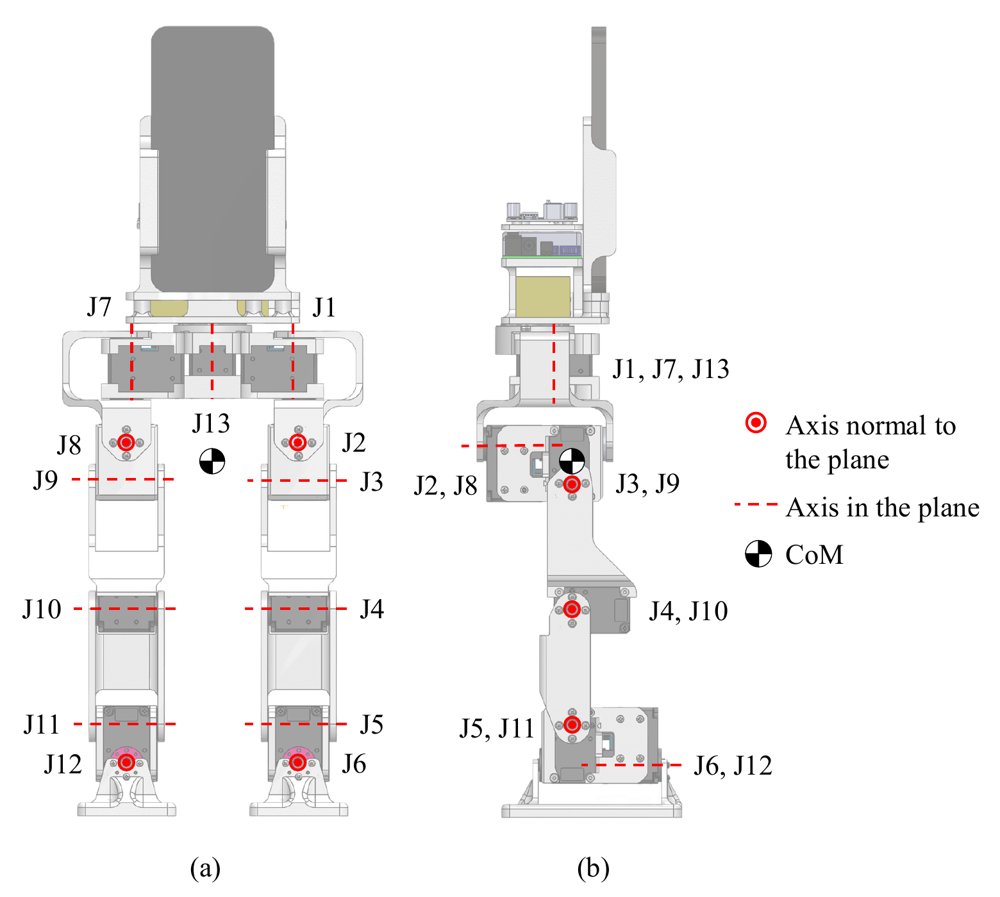
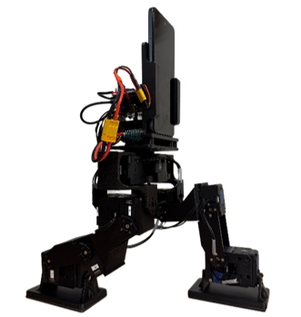
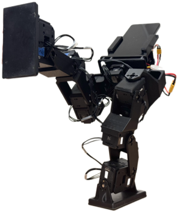

Bill of Materials
The component list for the hardware, with quantities and costs.
A familiar device. A new robotic platform.
Reusing smartphones for humanoid sensing and computing.
PhoneBot is a low-cost, open humanoid robot platform that combines a modular body with a commodity smartphone as its primary sensing and computing unit. The platform stands 48.3 cm tall, weighs 1.8 kg including the smartphone, and costs approximately $400 excluding the phone. It contains 13 actuated joints, including six per leg and one torso yaw joint, all driven by DYNAMIXEL XL430-W250-T servomotors.
The smartphone provides the camera, IMU, wireless connectivity, and onboard processing for perception and locomotion policy inference. A compact single-board computer handles actuator communication and executes joint-position commands. Commands and feedback pass over Wi-Fi, allowing the phone to operate without an electrical connection to the robot hardware and simplifying compatibility with different smartphone models.
* Mass includes the smartphone. Hardware cost excludes the smartphone.



Loading the 3D model…
The phone’s camera and IMU provide visual and inertial measurements, while the robot application supports visual tracking, SLAM, locomotion policy inference, and user interaction, with access to cloud-based services when needed. The smartphone exchanges commands and feedback with the onboard single-board computer over Wi-Fi, without a physical electrical connection to the robot. The onboard computer receives target joint positions from the phone and communicates with the 13 DYNAMIXEL actuators through a USB-connected U2D2 interface and TTL bus. Joint-state feedback, including positions, velocities, and torques, together with wireless gamepad inputs, is relayed back to the phone. A 3S battery supplies the actuator system, while a DC converter provides 5V power to the onboard computer. This arrangement separates smartphone-based sensing and high-level processing from actuator communication and power distribution.
Camera & IMU
Perception & policy inference
User interface
Command execution
Actuator communication
DYNAMIXEL XL430-W250-T
Leg & torso joints
The original PhoneBot CAD files, mechanical exports, bill of materials, and assembly documentation are released under the Creative Commons Attribution–NonCommercial 4.0 International License (CC BY-NC 4.0). You may copy, share, and adapt these materials for noncommercial purposes, provided you give appropriate credit, include a link to the license, retain applicable notices, and indicate any changes. Commercial use requires separate permission from the rights holders. Third-party materials remain subject to their respective licenses. All files are provided “as is,” without warranty.
The component list for the hardware, with quantities and costs.
Explore the robot geometry with an assembly download or an interactive CAD view.
Download a ZIP containing the complete PhoneBot assembly in STEP format.
Download a package of printable components for fabricating the robot structure.
Step-by-step videos or instructions for assembling the robot.